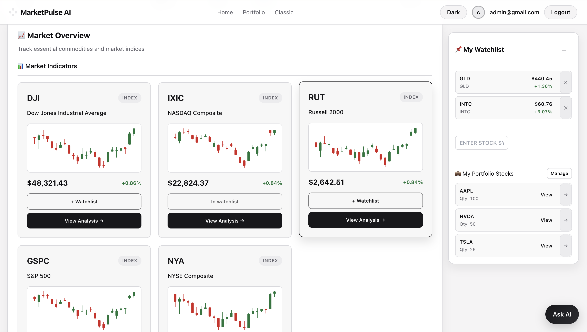

Featured Projects

MarketPulse AI — Market, Portfolio & Stock Intelligence
Full-stack market intelligence with a unified dark/light shell: sign-in, home watchlist screener and search, market overview cards and movers, manual portfolio with allocation and vs-index charts, and deep per-symbol analysis—predictions, reversal-style signals, prediction reasoning, technical indicators, comprehensive narrative analysis, and news—plus Classic for the full TradingView workspace and Ask AI when enabled.

Quantifying Meritocracy: Talent vs. Luck
A computational economics research project recreating the Talent vs. Luck model and extending it with solidarity policies. The simulations show luck dominates success in pure meritocracy, while moderate redistribution can reduce inequality by 92% and achieve 100% upward mobility.

Job Search Tool
A React-based job aggregator that pulls Computer Science, Data Science, and Machine Learning jobs from major platforms, supports advanced filtering/sorting, and tracks applied jobs with local persistence.

PokeFind - Real-Time Pokémon Tracker
A full-stack web application designed to enhance the Pokémon Go experience by providing real-time Pokémon radar, Gym and Raid information, and GPS route import/export features. Built with React, Node.js, and MongoDB.